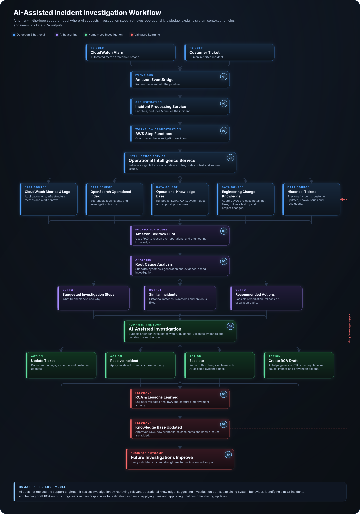

AI-assisted operational intelligence layer designed to improve troubleshooting, incident response, knowledge retrieval, root cause analysis, auto-ticketing and continuous reliability improvement.
The AI operations layer is designed to move the organisation from reactive support toward intelligent, assisted operations. The aim is not to replace support teams, but to help engineers investigate incidents faster, reuse knowledge more effectively, identify recurring issues, and respond with more consistent operational guidance.
Use AI to summarise symptoms, logs, historic tickets and documentation so engineers can understand incidents faster.
Retrieve relevant runbooks, known issues, architecture decisions and previous incident patterns during live support.
Guide engineers through consistent investigation steps, escalation paths, rollback options and validation checks.
Identify repeated incident patterns across services, queues, databases, fulfilment workflows and operational tickets.
Support post-incident analysis by correlating symptoms, timeline, affected systems, likely causes and improvement actions.
Turn incidents into structured learning, runbook updates, automation opportunities and architecture improvements.
This workflow demonstrates how operational telemetry, historical support knowledge, engineering documentation and AI-assisted reasoning work together to support engineers throughout an incident investigation. Rather than replacing engineers, AI accelerates investigation, suggests investigation steps, retrieves system context, assists with Root Cause Analysis (RCA), and helps improve organisational knowledge after every incident.

Human-in-the-loop principle: AI supports the investigation by retrieving evidence, identifying similar incidents, explaining system context, suggesting investigation paths and helping draft RCA outputs. Engineers remain responsible for validating evidence, making operational decisions, applying fixes, escalating where required and approving customer-facing updates.
Incidents may originate from CloudWatch alarms, automated monitoring, or customer-reported support tickets. Each event enters a shared investigation workflow so alerts and user-reported issues can be handled consistently.
The Operational Intelligence Service retrieves relevant evidence from CloudWatch metrics and logs, OpenSearch, historical tickets, system documentation, runbooks, release notes, hot fixes, rollback history and project changes.
AI suggests investigation steps, explains application workflows, retrieves relevant documentation, identifies similar incidents and recommends next actions based on trusted operational knowledge.
The support engineer performs the investigation using AI guidance, validates evidence, checks system behaviour and decides whether to resolve, rollback, escalate or continue investigating.
After the ticket investigation, AI helps draft the RCA by summarising the timeline, symptoms, impact, root cause, contributing factors, resolution steps and prevention actions for engineer review.
Approved RCAs, updated runbooks, known issues, release notes and architecture changes are written back into the operational knowledge base so future investigations become faster and more accurate.
Summarise symptoms, affected services, timeline, impact and current state from logs, alerts and ticket information.
Recommend relevant troubleshooting steps based on service, error pattern, alert type or previous incidents.
Identify repeated errors, timeout patterns, queue delays, database issues and integration failures.
Search operational documentation, architecture decisions, known bugs, previous fixes and support notes.
Generate ticket summaries, affected components, priority suggestions, probable causes and suggested next actions.
Help structure post-incident reviews by summarising causes, contributing factors, mitigations and follow-up actions.
This simulated example shows how an AI operations assistant could convert an operational alert into structured investigation guidance, evidence checks and next actions.
The alert may indicate delayed message processing between the fulfilment platform and downstream operational services. Suggested investigation steps include checking queue depth, reviewing consumer service health, validating database response times, and confirming whether recent deployments or integration failures correlate with the alert window.
Recommended Actions:
1. Check CloudWatch metrics for queue depth and consumer errors.
2. Review application logs for timeout or retry patterns.
3. Validate database performance and long-running queries.
4. Check recent deployment activity.
5. Follow messaging service recovery runbook if queue processing remains delayed.
The AI operations layer becomes more useful when it can retrieve trusted operational context rather than relying on generic responses.
Target architecture, current-state assessment, migration strategy, diagrams and architecture decision records.
Standard troubleshooting steps, escalation paths, recovery procedures and validation checks.
Previous incidents, known issues, recurring problems, fixes, customer impact and resolution notes.
Application logs, infrastructure metrics, queue behaviour, database performance and service health signals.
Azure DevOps release notes, hot fixes, rollback history, project changes, known bugs and affected versions.
Operational notes, investigation patterns, ticket outcomes, troubleshooting decisions, RCA summaries and lessons learned.
AI provides recommendations, but engineers remain responsible for validation, decision-making and production changes.
Operational data, logs, tickets and customer information require careful access control, masking and governance.
Responses should be grounded in approved runbooks, architecture documents and operational knowledge sources.
AI recommendations should show why a suggestion was made and which sources informed the response.
AI should not directly deploy fixes without approval gates, validation checks and rollback controls.
AI outputs, runbooks, incident summaries and recommendations should be reviewed and improved over time.
The initial portfolio version demonstrates the architecture and workflow concept. A future implementation could use a RAG-based design connected to documentation, tickets, logs and operational runbooks.
Ingest architecture docs, runbooks, support notes and known issue records into a searchable knowledge base.
Use embeddings and vector search to retrieve relevant operational context based on incident symptoms.
Generate grounded answers using retrieved knowledge, service context, runbooks and architecture decisions.
Connect alerts, logs and metrics so incident context can be summarised automatically.
Integrate with tools such as Freshdesk, Jira or ServiceNow to enrich tickets and support workflows.
Capture engineer feedback to improve runbooks, AI responses, knowledge quality and operational maturity.
Engineers can understand symptoms and likely causes faster using AI-supported context retrieval.
Teams follow more consistent investigation steps rather than relying only on individual experience.
Past incidents, known issues and runbooks become easier to find and reuse during live support.
Post-incident reviews become more structured, evidence-based and connected to improvement actions.
AI-assisted guidance helps reduce repeated investigation effort and improves team confidence.
Recurring issues feed back into architecture improvements, automation opportunities and operational maturity.